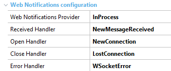

There are some scenarios where you need to send notifications from client to server (and not only the other way).
Typically, in an n-to-n communication (in a chat room) the notifications should be sent from the client (it can be Web or Smart Device) to the server, and from the server to the client (in a bi-directional way).
Notifications can be sent from the server to the client using the Server.Socket external object.
At present, GeneXus does not support an API for sending notifications from the client to the server, but an external app can send those notifications and GeneXus is able to receive and process the incoming messages.
When the notification is received from an external app, it should be processed.
The are some properties available which allow you to establish the handler to be used when a notification is received, and also when a connection to the web socket is open or closed. This can be useful in a chat room, for example, to know when new clients are added to the chat or leave it.
In summary, the properties involved in the solution are the following (at generator level):
| Property Name | Description | Procedure Signature |
| WebNotifications Provider: None | In Process | None: The application doesn't receive notifications. In Process: The application will receive notifications and is able to handle them. |
------ |
| Received Handler | A procedure of the KB. The procedure will execute when a new message is received. |
parm(in:&ClientId, in:&NotificationInfo) &ClientId: VarChar(200) &NotificationInfo is of NotificationInfo data type (predefined Structured Data type GeneXus.Web.Notifications.NotificationInfo). The incoming message is loaded in the Message property of the SDT. Id and Object properties of the SDT are empty in external notifications. |
| Open Handler | A procedure of the KB. The procedure executes when a connection to the web socket is done. | parm(in:&ClientId) |
| Close Handler | A procedure of the KB. The procedure executes when a connection to the web socket is closed. | parm(in:&ClientId) |
| Error Handler | A procedure of the KB. The procedure executes when an error is thrown in the web socket connection. | parm(in:&ClientId, in:&ErrorMessage) |
Consider a web panel where the incoming messages from an external application are going to be processed in a GeneXus web application and sent to the GeneXus clients connected to the web socket.
In this example, the properties in the KB are as follows:

Note that the Received Handler property is set to "NewMessageReceived" procedure, whose code is as follows:
parm(in:&ClientId, in:&NotificationInfo);
&NotificationInfotoSend.Message = Format(!"%1 (%2)", &NotificationInfo.Message.Trim(), &ClientId) &webNotification.Broadcast(¬ificationInfoToSend)
The Received Handler receives two parameters, one of them is the &ClientId of the client that sends the notification, and the other is an SDT which contains the incoming message (the SDT properies Id and Object are always empty in this case). We've defined another NotificationInfo variable (called &NotificationInfotoSend) that loads the Message to be sent to the clients. It will include the original message plus the ClientId information. In this case, the message is sent to everyone (we use the BroadCast method of WebNotification).
Then, what's left is to show those messages in the web panel. We use the OnMessage event for receiving the web notifications sent from the NewMessageReceived procedure.
Event OnMessage(&NotificationInfo)
&IncomingMessage = &NotificationInfo.Message
//Process the web notification
Endevent
Download sample from here.
Java WebSocket 1.1 API defined by JSR-356. For example, in the case of Tomcat, the required version is 7.0.60 or higher.
Since GeneXus 15 Upgrade 3 for Java Generator and since GeneXus 15 Upgrade 6 for .NET generator.
| Backlinks | |
| Adding additional files to an application package | Client.Socket External Object |
| Load balancing considerations | Notifications Provider property |
| Server.Socket external object |